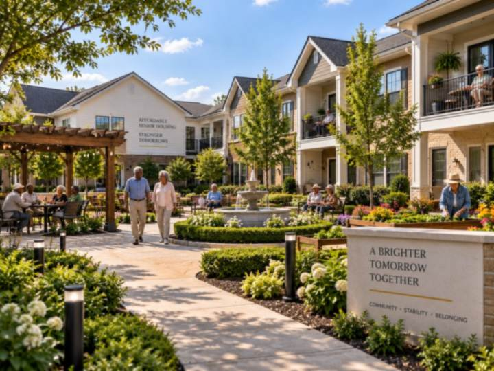

Our Process
From a first look at your land to the day residents move in
Five stages, in plain language, with a straight answer at each one about whether the project still works. You will always know what happens next and who is responsible for it.
How It Works
The five stages of a project
Every engagement runs through the same sequence. Where you join it depends on how far along your property already is.
-
Feasibility
Property and feasibility review
We start with what you already own. Title, site constraints, and what the land can physically carry, then the economics of what could be built on it. You get a straight answer before you spend money finding one out.
- Property, title, and site constraint review
- AMI tier and unit mix modelled against real revenue
- A written summary of what the land can support
-

Funding
Financing pathway identification
There is rarely one way to fund a project, and the right route depends on who owns the land, what the congregation wants to keep, and how much risk it is willing to carry. We map the options and explain what each one costs you.
- Tax credit, city, HUD, and private capital routes compared
- Owner-financed land evaluated as an equity contribution
- Recently released federal housing funding assessed
-
Team
Developer and vendor selection
The firm does not build. We help you choose the licensed developer who will, and we read the agreement before you sign it. That is the point in a project where congregations are most often under-represented.
- Developer shortlisting and vetting
- Development agreement review and negotiation
- Vendor and consultant selection support
-
Approvals
City of Houston submission and approvals
Houston has its own sequence, its own timelines, and its own places where projects stall. We prepare the submission, track it, and keep one named person responsible for moving it forward.
- Pre-submission checklist completed before filing
- A designated city liaison for the project
- Realistic timeline buffers built in from the start
-

Delivery
Monitoring through to project close
We stay with the project after the approvals land. Construction is monitored, closings are coordinated, and the congregation keeps an advocate at the table until residents move in.
- Construction progress monitored against the plan
- Closing documentation and third party coordination
- One point of contact through to completion

Financing
The routes we advise on
Most projects use more than one of these. Which combination fits depends on your land, your goals, and how much risk your organisation is prepared to carry.
-
Low-Income Housing Tax Credits
The most common route for affordable rental housing, typically structured at 60 or 80 percent of area median income.
-
Owner-Financed Land as Equity
Your land becomes your contribution to the deal, which can reduce what the project needs to borrow and keep more control with the congregation.
-
City of Houston Programs
Local programmes and incentives, including the sequencing and paperwork that decide whether an application moves or sits.
-
HUD Grant Opportunities
Federal grant routes assessed against what your site and your timeline can realistically meet.
-
Private Capital and Build-to-Rent
Evaluated case by case. We look at whether the structure actually aligns with what the congregation wants, not only whether it funds.
-
Land Sale with Participation
Selling the land while keeping a share of the project upside, for congregations that would rather not carry development risk.


Swipe or tap the arrows to see every route
Straight answers
When the numbers do not work
Not every site can carry housing, and not every affordability target can be funded. If that is true of your property, we will say so early and explain why, rather than letting you spend a year discovering it.
Talk it throughRisk
What we plan for in advance
These are the four places Houston projects most often lose time or money. Each one has a plan attached to it before the work starts.
-
City of Houston delays
We complete a pre-submission checklist before anything is filed, build realistic buffers into the timeline, and name one person as the liaison for each project so nothing sits waiting on an unowned task.
-
AMI feasibility limits
Housing at 40 percent AMI often cannot generate enough revenue to carry a project. We set that expectation at the start rather than after a year of work.
-
Deals that do not fit your goals
Some proposals fund a building but conflict with what a congregation actually wants, such as lease-only structures where the goal was homeownership. We document the criteria for declining those before they are on the table.
-
Complex closings
Closings with several investors and multiple law firms are where projects lose time and money. Warner and Associates handles the documentation and coordinates the third parties directly.


Ready to see what your land can do?
Bring us the property and we will tell you honestly whether housing works on it, before you commit to anything.

- Call Now! (713) 555-0147
- Email Us! info@wwhdllc.com
Contact Us
Get in touch with our team
Tell us about the property and what your congregation or organisation is hoping to build. The first conversation costs nothing.